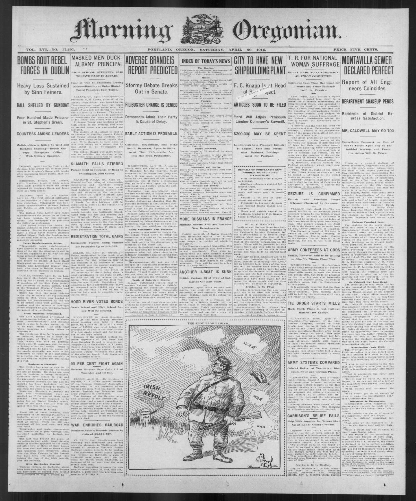
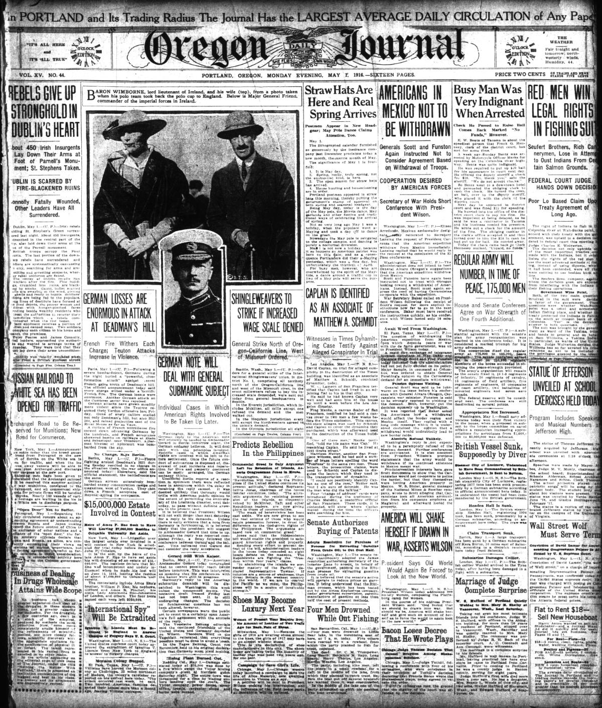
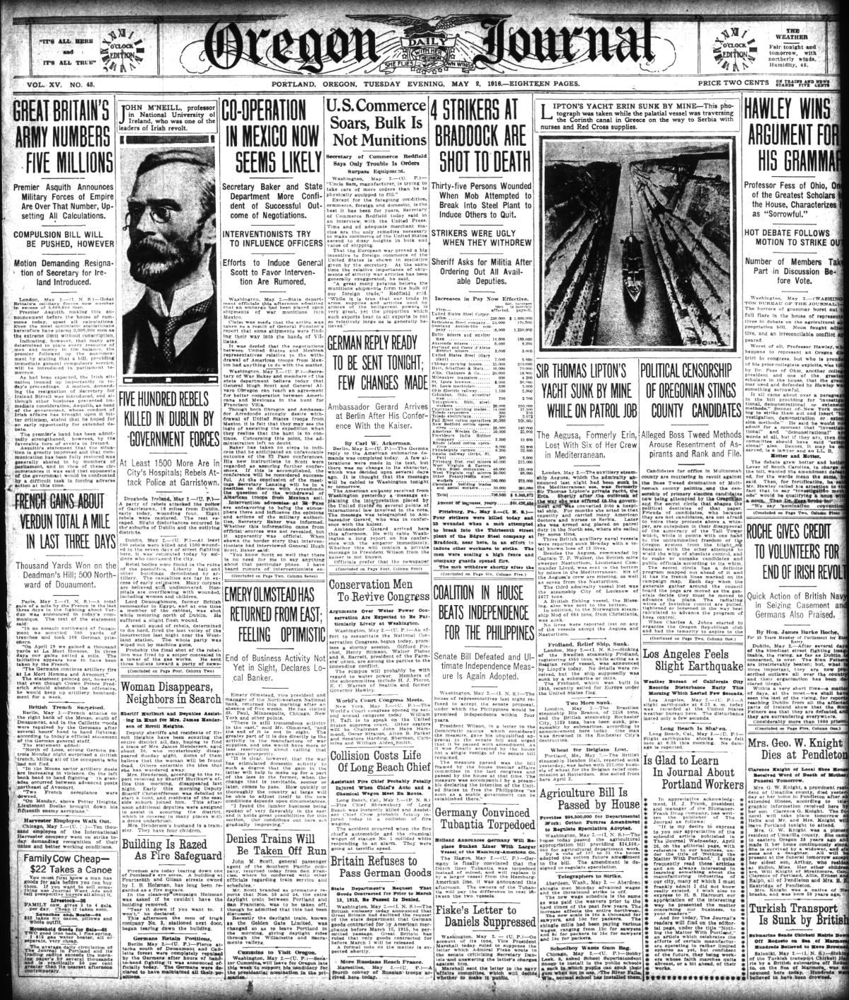

HN HN-400 · May 4, 1916 · War, Conflict & Security > Revolutions & Armed Uprisings > Insurrections
Source: Syracuse and Lake Wawasee Journal, p. 1 — original page.
Report: The Indiana weekly reproduced a London communiqué claiming that Irish insurgent leaders had surrendered, the Four Courts area was retaken, and 707 prisoners were in custody. Its language adopted the British command's view of a rebellion successfully suppressed.
Assessment: The Easter Rising of April 1916, British military suppression, arrests, and executions are established history. This is a belligerent government's contemporary statement, not an independent accounting of all rebels, civilian deaths, or the political consequences. The OCR even reads “Iceland†where the report plainly concerns Ireland. Follow-up open on individual prisoners and changing tallies.
Authentic images retrieved from Historic Oregon Newspapers (University of Oregon). Article crops are located using the archive's own OCR word coordinates and rendered at native crop resolution; article clips are assembled from the archive's own article-block images; page scans are reduced-size access renditions. No images were generated, mocked, or retouched.



Not yet acquired. Queued for provider-specific acquisition testing (see source-acquisition manifest).
URL (preserved verbatim): https://newspapers.library.in.gov/?a=d&d=TSYLWWJ19160504.1.1
Saved research report: Historical_Newspaper_Event_Research_378-402_2026-10-23.md
Evidence note: A newspaper report means a historical publication made a claim; it does not establish that claim as fact. Contemporary reporting is separated from later scholarly context and our own assessment.